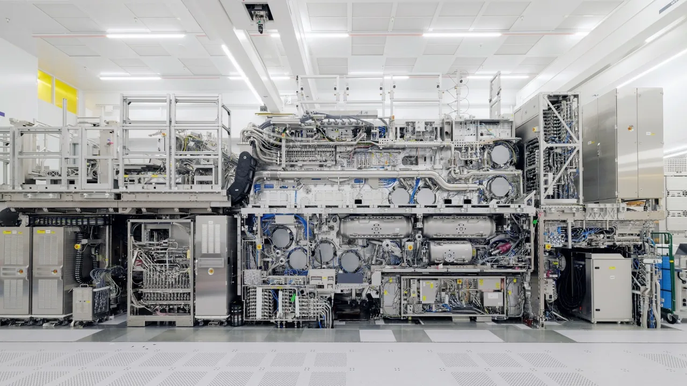

ASML 주주가 지금 가장 궁금해할 질문은 “EUV 독점이 계속될까”보다 조금 더 날카롭습니다. 독점 자체는 이미 시장이 오래 알고 있는 이야기입니다. 앞으로의 핵심은 2026년 상향된 매출 범위가 실제 장비 설치, 고객 검수, 서비스 매출, 매출총이익률로 얼마나 조용히 이어지는가입니다. 반도체 사이클이 다시 뜨거워질 때 ASML은 가장 먼저 주목받지만, 주가가 오래 버티려면 수주 숫자보다 수주가 현금흐름으로 바뀌는 속도가 더 중요합니다.
ASML은 2026년 1분기 총 순매출 88억유로와 순이익 28억유로를 발표했습니다. 매출총이익률은 53.0%였고, 2026년 연간 총 순매출 가이던스는 360억~400억유로, 매출총이익률은 51~53% 범위로 제시되었습니다. 숫자만 보면 회사의 방어력은 여전히 강합니다. 다만 이 가이던스에는 고객의 AI 설비투자 확대와 수출통제 불확실성이 동시에 들어 있습니다. 좋은 수요와 정치적 제한이 같은 표 안에서 움직이는 셈입니다.
ASML은 단순 장비 회사가 아니라 선단 공정의 병목을 쥔 회사에 가깝습니다. TSMC, 삼성전자, 인텔, SK하이닉스, 마이크론이 더 작은 공정과 고성능 메모리로 이동하려면 노광 장비 로드맵을 피하기 어렵습니다. 그래서 ASML의 강점은 고객이 대체하기 어렵다는 점입니다. 반대로 약점도 같은 자리에서 나옵니다. 고객 수가 제한적이고, 고객의 팹 일정이 늦어지면 ASML의 매출 인식도 함께 늦어질 수 있습니다.
가이던스 상향은 출발점입니다

ASML의 2026년 1분기 실적은 투자자에게 두 가지 신호를 줍니다. 하나는 AI 인프라 투자가 선단 반도체 수요를 여전히 밀고 있다는 점입니다. 다른 하나는 이 수요가 곧바로 모든 분기 실적을 매끄럽게 만든다는 뜻은 아니라는 점입니다. ASML의 장비는 크고 비싸며, 고객의 공장 일정과 공정 전환 계획에 맞춰 움직입니다. 장비 한 대가 출고된다고 바로 모든 매출과 이익이 한 번에 확정되는 구조가 아닙니다.
그래서 연간 매출 360억~400억유로 가이던스를 볼 때는 범위의 위쪽보다 아래쪽을 먼저 봐야 합니다. 가이던스 상단은 AI 수요와 고객 증설이 순조롭게 진행될 때의 기대를 보여줍니다. 하단은 수출통제, 고객 설치 지연, 일부 장비 믹스 변화가 생겼을 때의 방어선을 보여줍니다. ASML이 좋은 회사인지 묻는 것보다, 이 범위 안에서 실제 실적이 어느 쪽으로 붙는지를 확인하는 편이 더 실전적입니다.
매출총이익률도 같은 방식으로 읽어야 합니다. 53.0%의 1분기 수익성은 강하지만, 2분기 회사 전망은 51~52%입니다. 이는 ASML이 독점적 장비를 팔더라도 제품 믹스, 설치 일정, 서비스 구성, 공급망 비용에 따라 분기 마진이 움직인다는 뜻입니다. 독점이 모든 비용을 지워주지는 않습니다. ASML 주가가 프리미엄을 유지하려면 매출 성장과 함께 51~53% 범위의 마진 신뢰가 계속 확인되어야 합니다.
High NA는 발표보다 고객 채택입니다
관련 영상
ASML 독점 구조와 반도체 장비 사업을 설명하는 한국어 롱폼 영상
ASML을 보는 다음 축은 High NA EUV입니다. 기존 EUV가 선단 공정의 핵심이었다면, High NA는 더 작은 패턴과 더 높은 밀도를 향한 다음 단계입니다. ASML은 High NA EUV가 더 높은 개구수를 통해 미세 패턴 구현 능력을 높이고, 차세대 로직과 메모리 공정의 복잡도를 낮추는 역할을 할 수 있다고 설명합니다. 이 말은 기술적으로 중요하지만, 투자 판단에서는 곧바로 매출로 번역하면 위험합니다.
고객은 새 장비를 “좋아 보인다”는 이유만으로 대규모 양산 라인에 넣지 않습니다. 노광 장비가 바뀌면 공정 레시피, 마스크, 계측, 수율 관리, 설계 규칙, 생산성 검증이 함께 따라옵니다. 특히 High NA는 장비 가격만이 아니라 고객 내부 엔지니어링 비용과 전환 시간을 같이 요구합니다. 그래서 투자자는 첫 출하 뉴스보다 고객이 어느 노드에서, 어느 공정 단계에, 어느 정도의 물량으로 채택하는지를 더 중요하게 봐야 합니다.
TWINSCAN NXE:3800E도 같은 맥락에서 볼 수 있습니다. ASML은 이 장비가 2나노 로직 노드와 선단 DRAM 양산을 지원한다고 소개합니다. 이는 ASML 장비가 AI 가속기와 고성능 메모리 수요의 뒤쪽에서 계속 필요한 이유를 보여줍니다. 다만 투자자는 제품명 자체보다 고객 생산성 개선이 실제 주문 반복으로 이어지는지를 봐야 합니다. 선단 노드가 늘어도 고객이 비용을 감당하지 못하면 장비 수요는 일정 속도로만 움직입니다.
주문은 설치와 검수 뒤에 매출이 됩니다
ASML 주식에서 순예약은 늘 중요한 지표입니다. 하지만 순예약을 매출처럼 읽으면 실수를 하기 쉽습니다. 반도체 장비는 고객이 주문하고, ASML이 생산하고, 운송하고, 고객 팹에 설치하고, 검수하는 시간이 필요합니다. 특히 EUV 장비는 단순한 기계 한 대가 아니라 광원, 광학계, 진공, 제어 소프트웨어, 서비스 인력이 함께 들어가는 복합 시스템입니다. 주문이 좋더라도 매출과 현금흐름에는 자연스러운 시간차가 생깁니다.
이 시간차는 나쁜 것만은 아닙니다. 오히려 ASML의 장기 가시성을 만드는 장점이기도 합니다. 고객이 선단 공정 로드맵을 계획하면 장비 확보를 미리 준비해야 하고, ASML은 그 일정에 맞춰 생산능력과 공급망을 조정합니다. 다만 이 가시성은 고객의 설비투자가 실제로 계속된다는 전제 위에 서 있습니다. TSMC, 삼성전자, 인텔 같은 고객이 AI 수요를 이유로 투자를 앞당기면 ASML은 수혜를 받지만, 수율이나 수익성 문제로 공장 일정이 밀리면 ASML도 영향을 받습니다.
설치 기반 관리 매출도 놓치면 안 됩니다. ASML의 2026년 1분기 설치 기반 관리 매출은 24억8,800만유로였습니다. 새 장비 판매가 고객 투자 사이클에 흔들리는 동안에도 기존 장비 업그레이드, 서비스, 유지보수는 비교적 안정적인 매출 기반을 제공합니다. 투자자는 ASML을 단순 신규 장비 판매 회사로만 보지 말고, 이미 전 세계 선단 팹에 깔린 장비 기반에서 나오는 반복 매출까지 함께 봐야 합니다.
독점 프리미엄은 규제와 고객 집중을 함께 받습니다
ASML의 독점적 지위는 강력하지만, 반도체 장비는 지정학의 영향을 크게 받습니다. 회사는 2026년 가이던스 범위가 수출통제 논의의 잠재적 결과를 반영한다고 언급했습니다. 이는 투자자가 중국향 매출, DUV 장비 제한, 미국·네덜란드 정책 변화, 고객 라이선스 상황을 계속 봐야 한다는 뜻입니다. ASML은 기술적으로 대체가 어렵지만, 팔 수 있는 시장과 장비 범위는 정책이 결정할 수 있습니다.
고객 집중도도 양면성이 있습니다. TSMC와 삼성전자 같은 대형 고객은 ASML 장비를 계속 필요로 하지만, 그만큼 협상력도 큽니다. 고객은 공정 수율, 생산성, 장비 가동률, 서비스 조건까지 세밀하게 따집니다. ASML은 독점에 가까운 장비를 갖고 있어도 고객의 투자 경제성을 무시할 수 없습니다. 고객이 반도체 가격, AI 수요, 파운드리 수익성, 메모리 사이클을 보며 증설 속도를 조정하면 ASML의 주문 흐름도 달라집니다.
ASML을 긍정적으로 보려면 세 가지가 동시에 확인되어야 합니다. 첫째, 순예약이 고객 로드맵의 실제 증설로 이어져야 합니다. 둘째, High NA와 EUV 장비 믹스가 매출총이익률을 지켜야 합니다. 셋째, 수출통제와 고객 설비투자 지연이 연간 가이던스 하단을 흔들지 않아야 합니다. 이 세 가지가 맞물리면 ASML은 독점 프리미엄을 계속 설명할 수 있습니다. 반대로 매출은 늘지만 마진이 내려가고 설치 일정이 밀리면 시장은 독점보다 사이클 리스크를 먼저 가격에 반영할 가능성이 큽니다.
따라서 ASML 주주는 다음 분기부터 총 순매출, 매출총이익률, 순예약, 설치 기반 관리 매출, High NA 고객 채택 발언을 한 묶음으로 확인하는 편이 좋습니다. EUV라는 단어는 여전히 강력하지만, 투자 판단은 단어가 아니라 숫자의 순서에서 나옵니다. ASML이 좋은 회사라는 결론보다 중요한 것은 좋은 회사가 지금 가격에서 어떤 증명을 더 해야 하는가입니다.